Costa da Lagoa: Die Siedlung am Westufer der Lagoa da Conceição ist nur per Boot oder zu Fuß über einen Pfad erreichbar. Mit dem Motorboot über die Lagune, Badestopps, dann der kleine Wasserfall der Costa da Lagoa. Dazu Craft-Bier aus Santa Catarina – die deutschstämmigen Städte im Hinterland brauen einiges davon.
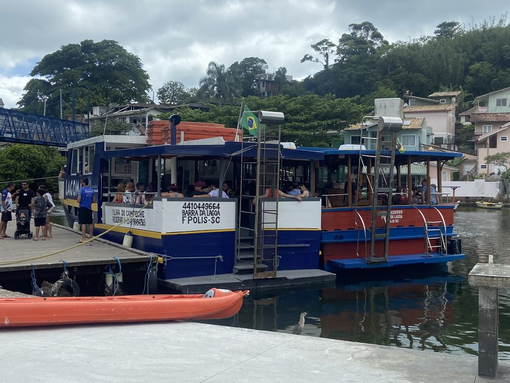
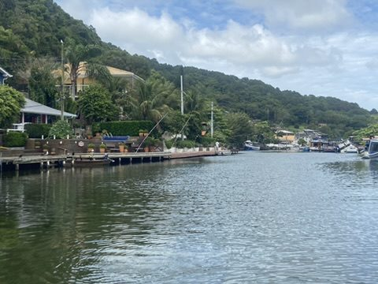
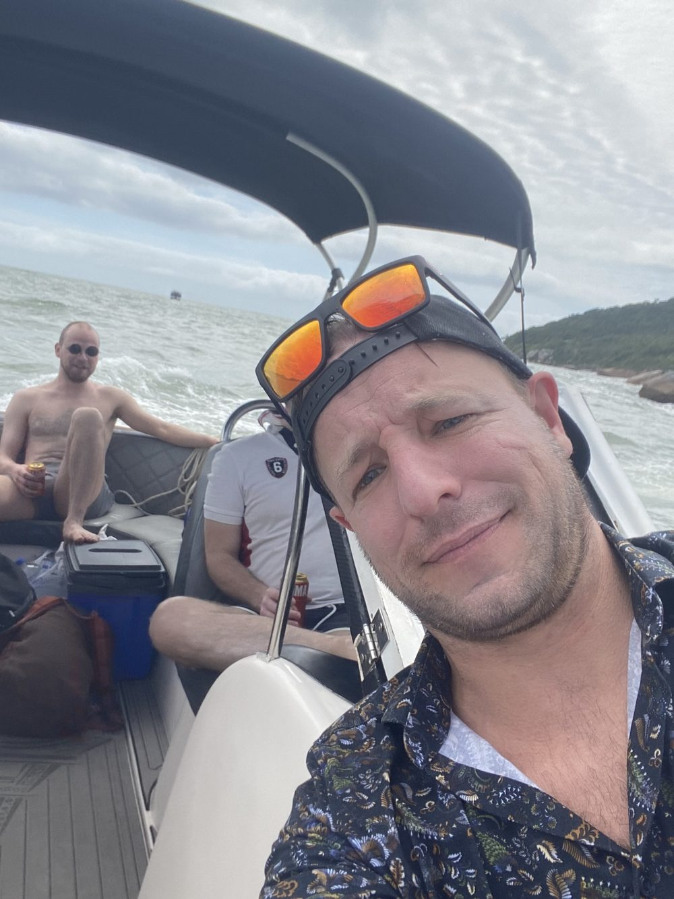
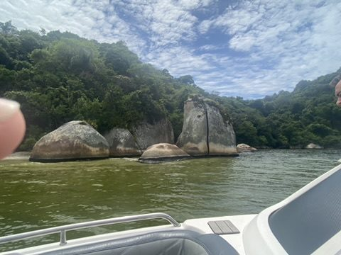
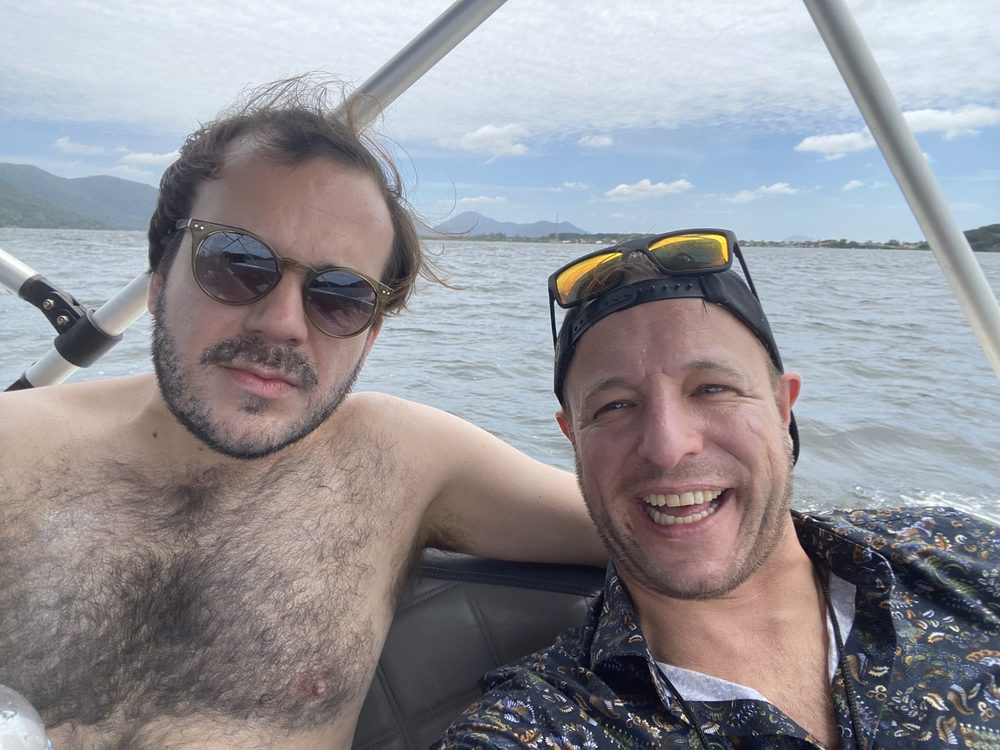
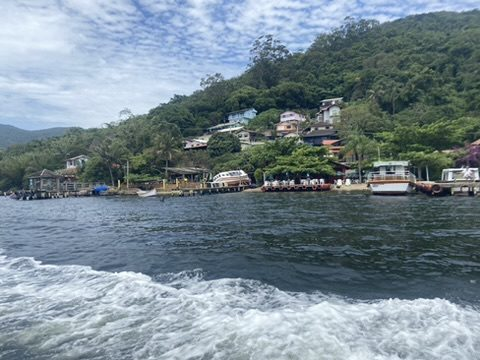
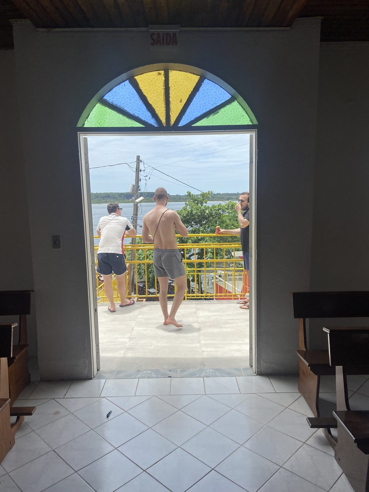
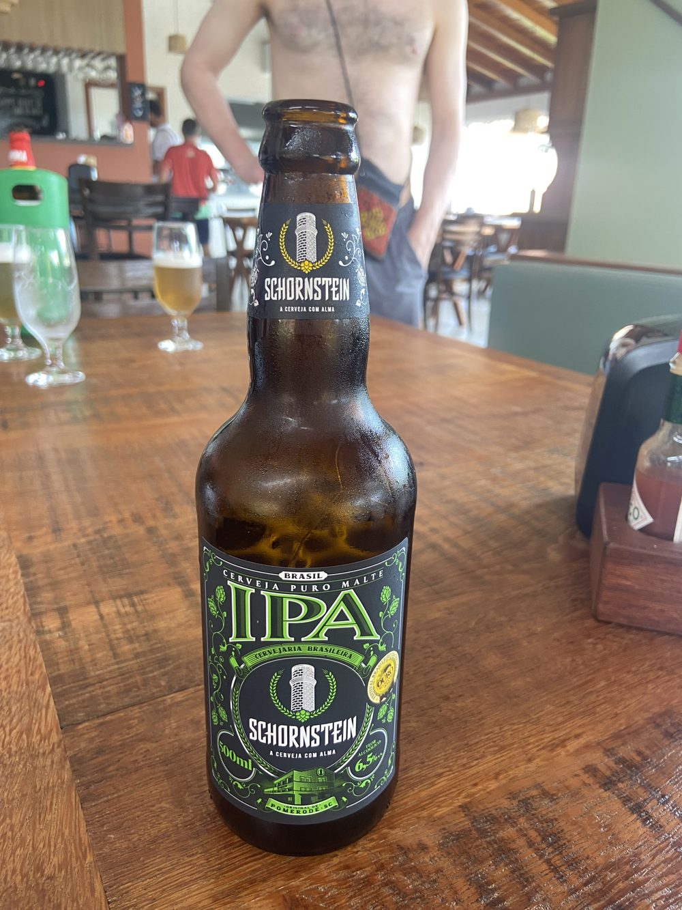
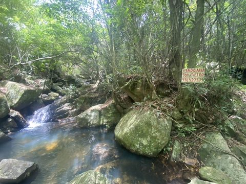
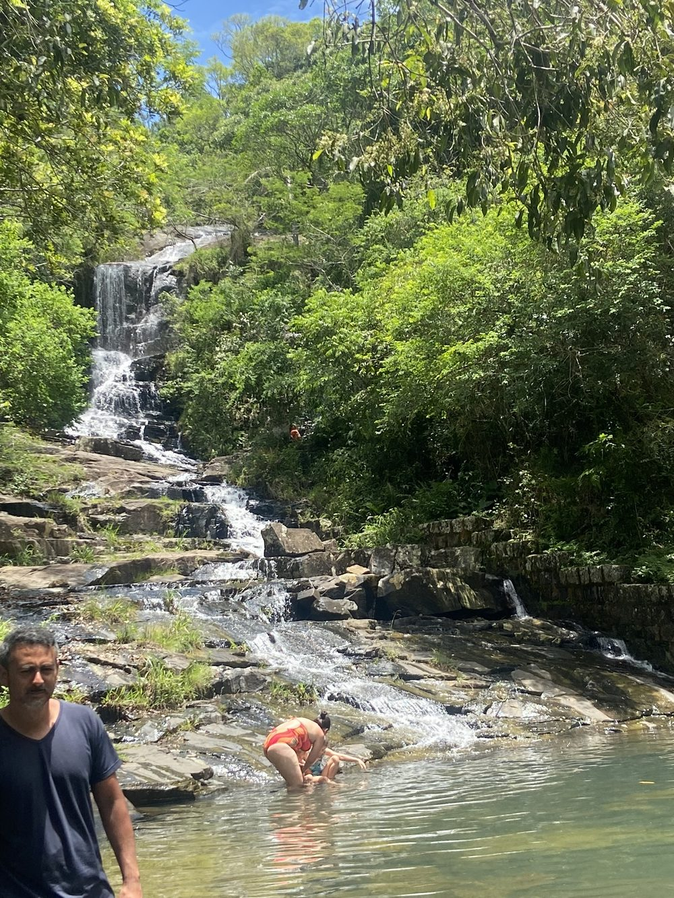
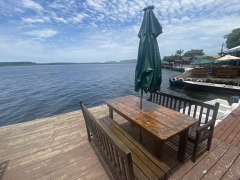
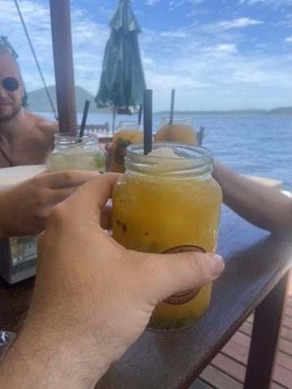
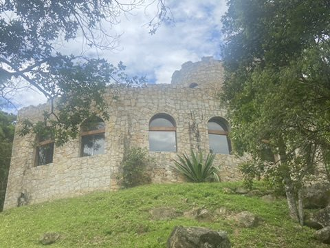
Abend an der Lagune: Abendessen auf einem Steg über dem Wasser, während es dunkel wird.
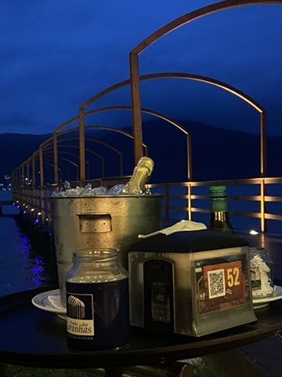
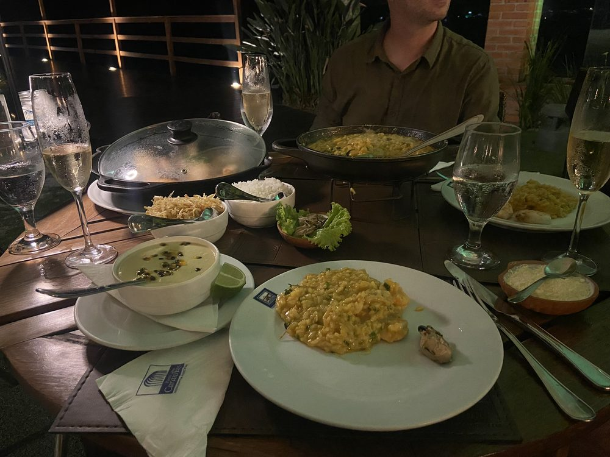